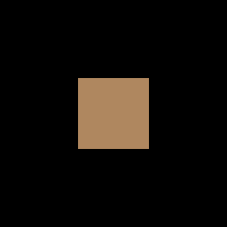

Showcase
Browser-playable demos, real-world game ports, XNA sample ports, and platform validation — CNA in action across multiple targets.
🌐 Browser Demos
CNA compiles to WebAssembly via Emscripten and its WEBGL2 renderer (an EasyGL profile, the Emscripten default) renders via WebGL 2. The demos below run directly in a modern browser — no installation required. They also double as manual smoke tests for the Emscripten/WebGL 2 target: if they load and respond to input, that target is healthy. They are prebuilt binaries whose CNA revision is not recorded, so they show what CNA can do, not the behavior of the documented snapshot; twelve more browser builds and the samples gallery are on the Demos page.
House 3D Demo
LiveA 3D procedural house scene built entirely from CNA primitives: exterior walls, a pitched roof, windows, a door, interior floors, and surrounding ground. The player can walk and jump with full gravity. Rendered via BasicEffect and the EasyGL renderer, compiled to WebAssembly with Emscripten.
Validates 3D matrix transforms, camera projection, per-vertex lighting, player physics, and the game loop — all running in-browser at interactive frame rates.
CNA 2D Demo
LiveA 2D sprite demo exercising the SpriteBatch API: texture loading, draw calls with position/rotation/scale, tinted sprites, and layered rendering. Runs in the browser via the same Emscripten/WebGL 2 pipeline as the 3D demo.
Acts as a manual regression check for 2D rendering correctness on the Emscripten target. Also validates the content loading pipeline for PNG textures under WebAssembly.
Note: the documented snapshot contains 20 workflow files (28 jobs), including focused Emscripten multi-renderer, HTML DOM browser, platform, Apple/Metal, C API header-level and subsystem gates; the Windows Direct3D/GDI lanes remain manual and no workflow builds the C API library, runs a Wayland session or runs the XNA oracle corpus. Those workflows do not continuously launch these hosted demo files or cover every browser, renderer and driver combination. Treat a successful local browser run as separate visual evidence, not as an implication from the repository CI matrix.
🎯 Verification against the real XNA runtime
Unit tests verify individual types in isolation. What they cannot verify is whether CNA behaves the way the real XNA runtime behaved, or whether the full programming model hangs together when actual game code drives it. Three things address that. They are checked mechanically rather than by eye, but they differ a great deal in how strong and how automated they are, and the honest boundaries are stated below and on the Verification page, which holds the proof.
Pixel-exact against real XNA
CNA maintains an XNA oracle corpus: 39 scenes (256×256, HiDef) under tools/xna-oracle/, with reference images captured by running the genuine Microsoft XNA 4.0 runtime — under Wine with DXVK on Linux, not on Windows. The repository records all 39 scenes as pixel-exact on the DIRECTX9 oracle path — the same Wine and DXVK stack at --tolerance 0, every RGBA channel of every one of the 65,536 pixels per scene.
This is the strongest correctness claim on the site: not "looks right", but byte-identical to what the original runtime produced — for these 39 scenes, on that host. The DIRECTX9 renderer exists largely to make this comparison possible — it uniquely targets pixel-exact XNA 4.0 authenticity. The boundaries matter: the last consolidated dated divergence report covers 31 of the 39 scenes and later per-scene notes record the rest, no 39-scene run was executed for this documentation, the result has not been repeated on native Windows, no CI workflow runs it, and no other renderer is held to this bar — EasyGL and Software are exact-gated on two line scenes only, Software was measured at 18 of 39 byte-exact (30 within one channel value), and FNA3D's gate only requires that the scenes render. Seven further unbound-texture scenes and a 17-format channel-expansion table were captured the same way but are outside every diff denominator.
Differential testing against FNA
A real running FNA build lives under tools/fna-reference/ and dumps its observable behaviour as JSON. tools/cna-reference/ produces the C++ counterpart dump, and scripts/compare-fna-reference.py diffs the two — a manual developer workflow covering enums, render-state presets, PackedVector types and Viewport maths, not a CI gate. New since alpha.1: FNA-produced compiled-effect fixtures (reflection, state and 8×8 pixels for seven effects) that CNA's tests replay.
Where XNA's documented behaviour is ambiguous, this settles it empirically instead of by interpretation. A separate compile-time CNAEXT purity check turns non-XNA declarations into [[deprecated]] warnings under -Werror; today it is wired up for the Devices and Sensors namespaces, and a signature-freeze test pins the Input namespace's public API.
Real ported games
Separate projects drive CNA with real game code rather than test harnesses; their figures belong to the repository revision named, not to the documented snapshot:
- cna-craft — about 13,800 lines of C/C++ (cna-lab revision
49e3cd5b): a port of fogleman/Craft, a voxel game, onto CNA. - cna-extended — about 102,000 lines (revision
5775ecc97): a C++23 port of MonoGame.Extended plus a non-upstreamWorld3DEXT3D scene layer. - cna-samples — 87 of 153 upstream XNA sample directories marked complete (revision
4da98a0), with native and in-browser runs.
Alongside them, CNA itself ships 28 cna_demo_* programs in its module example directories — 2D, audio, XACT, input, devices, avatar, GamerServices and networking demos — plus cna_house3d_demo and the new cna_inspector_demo.
More checks since alpha.1
The evidence set has grown around the oracle corpus: 32 renderer-neutral parity fixtures run on four renderers (EasyGL, WebGPU, SDL_GPU and OpenGL 4), judged by the fixtures' own assertions rather than by real XNA; a Content Pipeline oracle in which genuine XNA pipeline assemblies produced a 128-type API inventory and a 152-case differential record; a glTF conformance corpus of 148 assets with renderer-owned goldens; and a bounded-memory test runner plus GPU-test isolation that make the very large suite runnable.
These are CNA-recorded results. They establish determinism and regression protection for the named renderers, not equivalence with a reference renderer, and none is run by the repository's workflows.
What the oracle corpus actually looks like
Four of the 39 scenes. Every one of these frames was drawn by the real Microsoft XNA 4.0 runtime — they are the reference images, not CNA screenshots. CNA's DIRECTX9 renderer is recorded as reproducing each of them byte for byte. The full set is described on the verification page.

Vertex-coloured triangle.

Alpha test discarding half a quad.

Fresnel-weighted environment reflection.

Back-to-front sprite sorting.
The honest framing: CNA is a research-grade porting-experiment framework, not yet a ship-a-commercial-game framework. What the evidence on this page supports is that the XNA programming model works, that rendering matches the original runtime where it has been measured (DIRECTX9, 39 scenes, under Wine with DXVK), and that the test suite is large and real (12,610 static test definitions across 904 CNA-owned test sources, none of which is a pass count). It does not yet support a claim that any commercial title has shipped on it.
🏃 Real-World Validation — Speedy Blupi
Unit tests verify individual types and subsystems in isolation. What they cannot verify is whether the full XNA programming model hangs together when real game code drives it. The Speedy Blupi port is a real-game case study of that question — evidence for the CNA revision it was built with, not for the documented snapshot. Speedy Blupi on the Demos page
What Speedy Blupi validates
Speedy Blupi is a classic action game: the 2013 Windows Phone edition was decompiled, moved from XNA 4.0 through MonoGame, translated from C# to about 32,000 lines of C++ and then ported onto CNA by the OpenEggbert project (mobile-eggbert). Running it exercises the full stack simultaneously:
- SpriteBatch — layered sprite rendering with correct depth ordering
- Input handling — keyboard, touch and accelerometer state each frame
- Audio —
SoundEffectandMediaPlayerfor per-event sounds and music - Content loading and saves — loose PNG and WAV assets through
ContentManager, and game state throughIsolatedStorage - Game loop semantics — fixed-timestep
Update/ variable-timestepDraw
What it proves
Real-world XNA-style game code runs on CNA at the revision it was ported to. The port was a translation, not a copy: the game's classes were rewritten from C# to C++ one by one, and the project keeps a list of open issues (sound timing, fullscreen, transparency). It shows that:
- CNA's API shape is close enough to XNA 4.0 that a ~32,000-line game could be translated class by class instead of redesigned.
- The framework can run a multi-system game loop on desktop and in the browser; the project's own notes, not CNA's CI, are the evidence for how well.
- Audio, input and rendering subsystems interoperate when driven by real game state, again for the revision it was built with.
Platform targets
The Speedy Blupi port records these project targets:
- Linux x86_64 — builds from source with CNA's
SDL_RENDERERbackend (its README default); Windows builds are documented - Android — a Gradle/NDK project exists; no APK has been published
- WebAssembly — a playable Emscripten build is hosted at speedyblupi.com (an early, May 2026 CNA revision using
SDL_RENDERER; predates alpha.1 and the documented snapshot)
Consumer-project results are useful evidence for that project's pinned revision, not a continuous platform gate for the documented snapshot. CNA itself has no Android workflow.
📚 Sample Applications — cna-samples
The cna-samples repository contains direct ports of the original XNA Game Studio 4.0 sample suite. Each one follows the original C# source as closely as possible — the point is to test CNA's API against what real XNA code actually demanded, not to write flattering new demos. All figures below are tied to the repository revision 4da98a0 (20 September 2026) and to CNA next at that date, not to the documented snapshot.
87 of the 153 upstream sample directories are marked complete in the repository's own plan — meaning a native OpenGL ES 3 run plus a real-browser WebGL 2 run with no workaround — including Platformer, MarbleMaze, RolePlayingGame, CatapultWars, HoneycombRush, NinjAcademy, GameStateManagement, Audio3D and the client-server networking sample, spanning 2D primitives, collision, AI and pathfinding, particles, complete 2D games, 3D audio and touch gestures. Forty of them are published as playable browser builds at samples.libcna.com.
The samples that used to be the most informative number on this page — 23 that could not build because they ship custom .fx shaders — have moved. BloomSample, ShadowMapping, NormalMapping, SkinningSample, PerPixelLighting, DistortionSample and the rest are now marked complete, because the official Effect binaries produced by XNA's own content build load through CNA's compiled-effect path. CNA still does not compile HLSL .fx source at run time. What blocks the remaining rows is not the shader gap: 49 wait on owner decisions (Windows Phone and WinForms apps, Avatar packs, XNA 2.0 archive samples, Visual Basic duplicates), 14 are documented non-ports, and Racing Game is tracked separately.
PrimitivesSample
PortedPort of the original XNA Game Studio 4.0 Primitives Sample demonstrating 2D primitive rendering: lines, triangles, rectangles, and circles drawn using SpriteBatch and procedurally generated textures.
Validates: SpriteBatch.Begin/End, pixel-texture creation, 2D coordinate mapping, and the basic game loop with variable-size window support.
Primitives3D
PortedPort of the original XNA Game Studio 4.0 3D Primitives Sample demonstrating 3D shape rendering: box, sphere, cylinder, torus, and teapot primitives rendered with BasicEffect lighting and per-object transform matrices.
Validates: BasicEffect with ambient/diffuse/specular lighting, VertexBuffer/IndexBuffer management, view/projection matrix setup, and the 3D rendering pipeline end-to-end.
CatapultWars
PortedPort of the original XNA Game Studio 4.0 Catapult Wars — a complete two-player turn-based artillery game with scoring, animated sprites, and game-state screens.
Validates: a full game loop end-to-end, not just an isolated API — sprite animation, input handling, scoring, and screen transitions working together.
GameStateManagement
PortedPort of Microsoft's Game State Management sample: a reusable screen-stack framework (menus, gameplay, pause, transitions) used as the foundation for many of the other official XNA sample games.
Validates: a layered GameComponent/screen architecture on top of CNA's Game base class.
Pathfinding & FlockingSample
PortedPorts of the XNA AI sample pair covering grid-based pathfinding and boid-style flocking/steering behavior, alongside related ports (ChaseAndEvade, WaypointSample, AimingSample, FuzzyLogic).
Validates: math-heavy gameplay code (vectors, steering forces, grid search) ported faithfully from C# to C++23.
Audio3D & GesturesSample
PortedPorts covering positional 3D audio playback and touch gesture recognition (tap, drag, pinch, flick) — the two least-graphics-focused corners of the XNA API surface.
Validates: SoundEffect3D-style positional audio and Microsoft::Xna::Framework::Input::Touch gesture handling outside of pure rendering code.
Repository: All sample ports live at github.com/libcna/cna-samples. Each sample includes build instructions and mirrors the structure of the original XNA sample project. Additional XNA 4.0 sample ports are added as API coverage expands.
🖥 Platform Validation
CNA is built on SDL3, which provides the portability layer. The table below reflects current validated state — "validated" means demos or game code has been built and run on real hardware or a real browser, not merely that the code compiles.
| Platform | Renderer | Status | Notes |
|---|---|---|---|
| Linux x86_64 | OPENGLES3 (EasyGL), VULKAN, SOFTWARE, SDL_RENDERER, OPENGL33 |
Validated | Primary source and CI platform: SDL3 with several renderers, SDL2 with OPENGLES3, and native X11 (no SDL) with OPENGL33, VULKAN, SOFTWARE and ALSA audio all run automatically under a virtual display. The workflows exercise configured slices, not every renderer or test definition. Native Wayland is covered by local test suites only — no workflow selects it. OPENGLES3 is the Linux default. |
| Android | SDL_RENDERER |
Partial | Source and CMake/NDK integration exist, including Android sensor paths and a Gradle demo project. There is no Android workflow lane and no preset, so do not promote configure/cross-build support into a runtime-observed device claim. |
| WebAssembly / Browser | WEBGL2 (EasyGL), CANVAS, HTML_DOM, SVG_DOM, WEBGPU |
Validated | The hosted demos, the samples gallery and the CNA Car Simulator and Street builds are playable WebGL 2 examples. A workflow builds one bundle containing the WebGL 2, Canvas, HTML DOM and SVG DOM renderers and another runs the HTML DOM suite in a headless browser (both pin an older sharp-runtime revision, so they are configured lanes rather than proof of a passing build); neither substitutes for testing every browser renderer in target browsers, and WebGPU has no workflow. |
| Windows | SDL_RENDERER, DIRECTX9, DIRECTX11, DIRECTX12, DIRECT2D, GDI |
Partial | Native MSVC and MinGW-w64 cross-build paths exist, plus a native Win32 platform backend that needs no SDL. The Direct3D 11/12, Direct2D and GDI workflow lanes are manually dispatched; an automatic MinGW-built lane executes the Win32 platform test harness under Wine, but not the renderers. Report a concrete configured build or runtime run rather than treating source support as continuous Windows validation. |
| macOS | SDL_RENDERER, METAL |
Partial | macOS 13.3 and later: an automatic macOS workflow builds the portable suites and launches a self-contained app bundle, and a separate workflow builds the native Metal renderer and runs its Metal tests. Those workflows pin an older sharp-runtime revision than the snapshot requires, so read them as configured lanes, not as evidence of a passing build; Metal's contract is the narrowest of the 3D renderers. |
| iOS | SDL_RENDERER |
Experimental | iOS 16.3 and later, allow-listed to SDL_RENDERER only. CI final-links a device app and launches a one-frame simulator smoke app; there is no physical-device, pixel, input or audio evidence. |
Renderer note: CNA snapshot 009d40f5 exposes 25 identities across 21 implementation families. A default build contains one selected with CNA_GRAPHICS_RENDERER; an opt-in CNA_GRAPHICS_RENDERERS build can contain several compatible families and select one before device creation. This page demonstrates only a tiny subset, so do not generalize its output or capabilities to the full inventory. See Renderers for the source-audited matrix and Runtime Renderer Selection for the multi-renderer boundary.